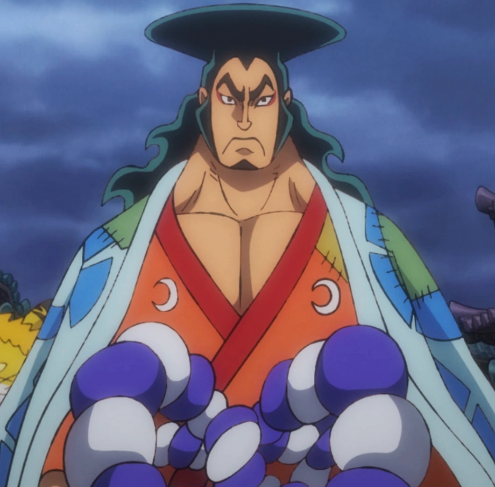

Oden

Description
Kozuki Oden was the daimyo of Kuri in Wano Country and the son of the former shogun Kozuki Sukiyaki, being a member of the Kozuki Family.
Ingredients
- Brashness
- Confidence
- Freedom
Steps
- Get banished
- Fight mountain god
- Unwillingly gather retainers
- Bring peace to Kuri
- Meet Whitebeard
- Set sail
- Find a wife
- Have kids
- Find the One Piece
- Return home
- Act a fool
- Boil